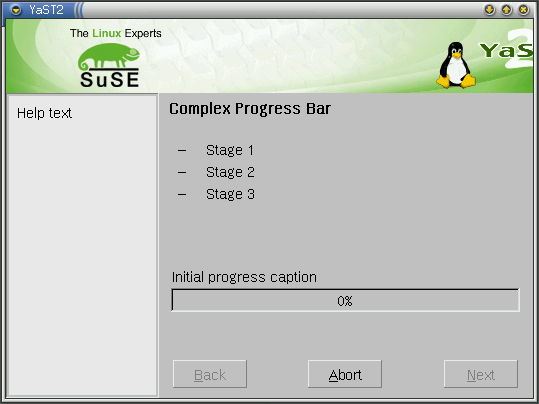
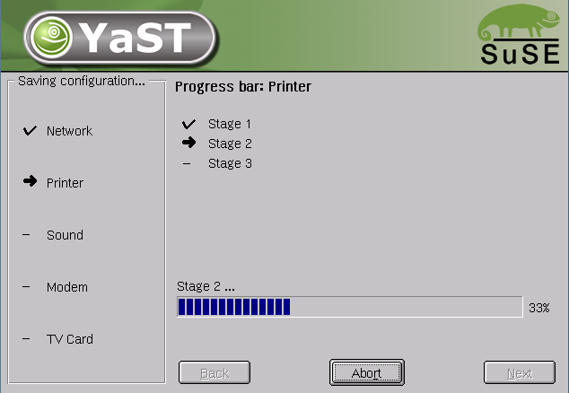

Everything you ever wanted to know about progress bar but were
afraid to ask
I found out that module Progress although having thorough autogenerated
documentation is often hard to use or misused. And people are shied to
ask. So I decided to create this small HOWTO and EXAMPLES file.
Q: What is progress bar and how can I use it in my YaST2 module?
A: Progress bar is a graphical widget that sweetens user's time spent
by the computer while waiting for some action to finish. In YaST2 you should
use module Progress. Start with adding import "Progress"; into your code.
Let's look at an example:
import "Progress";
Progress::New (
"Complex Progress Bar",
"Initial progress caption",
20,
[ "Stage 1", "Stage 2", "Stage 3", ],
[ "Stage 1...", "Stage 2...", "Stage 3...", "Finished", ],
"Help text"
);
This create progress bar that looks like this:

The lines "Stage 1", "Stage 2", Stage 3" are called stages.
The 20 in Progress::New call has nothing to do with stages, it is length
of the progress bar widget at the bottom of the screen. Now let's try:
Progress::NextStage ();
As you see, there is an arrow by the text
"Stage 1" and progress bar widget label changed to "Stage 1...". Now you
could understand what stages are good for. Try this:
Progress::NextStep ();
Do not worry, this does not re-install your
linux box. It will only advance progress bar widget value. Now you should
understand, that there can be other number of progress bar stages and steps.
Q: What's the Help text good for?
A: Some people like them. But usually noone reads. But anyway. If you
want to set the help texts in one call with the progress bar setup, you may
use the last parameter. If you want to leave help text untouched, supply "" or
nil. If you want to clear it, pass " " (space).
Q: This progress bar is too complex. I can live with just progress bar
widget without stages. Do I have to construct screen on my own?
A: No. Use call of Simple instead if New.
Progress::Simple (
"Simple progress bar",
"Progress bar title",
100,
"Help text");
As you see, there are no stages so only calls NextStep, Step and Title apply
here.
Q: Wow, that's exactly what I wanted. Are there any other tweaking
possibilities?
A: Of course. You can stay without progress bar widget - may have just
stages. Just pass 0 as length argument in function New.
Q: Anything else?
A: No. But if you have any suggestion, feel free to ask. BTW: keep in
mind strange "feature" of libyui. If you pass an empty string as progress bar
title in call of New or Simple, progress bar widget will have NO title (even
if you try to change it latter). See
Bugzilla 10258 and
do not forget that if it works today it need not work tommorrow.
Q: I want a function that goes to the next step and changes title. Please
change function NextStep to take title as an argument.
A: No. Use Progress::NextStep ();
Progress::Title (_("My new title"));I hate changing existing interface.
If you can not live without it, mail me, I will create other function.
Q: Are there any conventions when creating package startup or finish
progress bar?
A: We are trying to compose them. As we are going to have an
autoinstallation, we should keep some unified structure of packages. First
attempt to define such structure is package skeleton. Please look at it and use
similar structure in your packages. You should define function Read and Write
that will handle the progress bar themselves. If the caller of one of these
functions does not want the progress bar, it just calls
boolean orig = Progress::set (false);
MyPackage::Write (``{return false; });
Progress::set (orig);
Q: Hey, it is ugly!
A: I know. Do you have a better idea?
Q: Is there some autogenerated documentation for Progress?
A: autodocs/Progress.html
Q: This progress bar is ugly and has terrible API. I will use my
own.
A: You should not. Please keep in mind that with this one we can change
look and feel of all progress bars simply by replacing module Progress.
Q: I have a question that is not covered by this FAQ. I found a bug. I want
a feature. What should I do?
A: Feel free to ask at any e-mail address you find in this text.
Q: What's Superior Progress bar?
A: It's a way to have a progress bar in a progress bar. It looks like
this:

I think it can be used in some cases, for example at the end of installation,
when settings of configuration packages are saved. Example of code:
{
import "Progress";
import "Wizard";
define SubProgress (string title) ``{
Progress::New ("Progress bar: " + title, "", 303,
[ "Stage 1", "Stage 2", "Stage 3", ],
[ "Stage 1 ...", "Stage 2 ...", "Stage 3 ...", "Finished", ],
"Help Text"
);
integer i = 0;
while (i > 301) {
if (0 == i % 100)
Progress::NextStage ();
Progress::NextStep ();
i = i + 1;
}
Progress::Finish ();
}
list<string> subs = ["Network", "Printer", "Sound", "Modem", "TV Card", ];
Wizard::CreateDialog ();
Progress::OpenSuperior ("Saving configuration...", subs);
foreach (string i, subs, ``{
Progress::StepSuperior ();
SubProgress (i);
});
Progress::StepSuperior ();
Progress::CloseSuperior ();
UI::CloseDialog ();
}
Petr Blahos pblahos@suse.cz